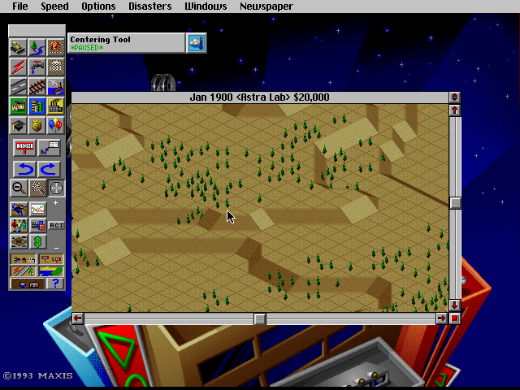

SIMCITY 2000 · AN AGENT'S CITY JOURNAL
A city, one decision
at a time.
Preparing the challenge
THE CHALLENGE
2,000 residents before 1910.
Then 3 profitable years.
Zero borrowing.
THE CITY THROUGH TIME
A front-row seat to the experiment.

THE NUMBERS BEHIND THE NEIGHBORHOODS
How the city is doing.
Choose a metric in each chart. Every point is a saved observation; game graphs update monthly. Empty-city zeros are not evidence of healthy services.
DECISIONS & ACTIONS
The mayor's notebook.
CITY LEDGER
Every reported metric.
Read from the original game's save file. Game indices retain their native units.
Annual budgets
Operating profit is verified separately from cash changes: construction also spends cash.
Watch, replay, and share.
This public page refreshes every 30 seconds and receives published updates about every 5 minutes while the local session is running. GitHub Pages deployment can add a delay. The private local viewer shows each action immediately.
Recording status loading…
Download city data · Source & activity archive · Save-format reference
Original SimCity 2000 running in DOSBox-X. The controller sends mouse and keyboard input; telemetry reads saves without changing them. No game binaries are distributed here.